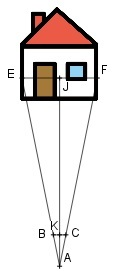

Aufgabe 108 Hält man seinen 2 cm breiten Daumen 45 cm von einem Auge entfernt, wird beim Peilen eine Hausfront von 7,32 m verdeckt. Wie weit ist der Betrachter vom Haus entfernt?  Strahlensatz: EF AJ ---- = ---- oder EF : BC = AJ : AK BC AK Inneres Produkt = äußeres Produkt BC * AJ = EF * AK |:BC AK = 45 cm = 0,45 m BC = 2 cm = 0,02 m EF * AK 7,32 m * 45 cm AJ = ---------- = ------------------ = 164,7 m BC 2 cm